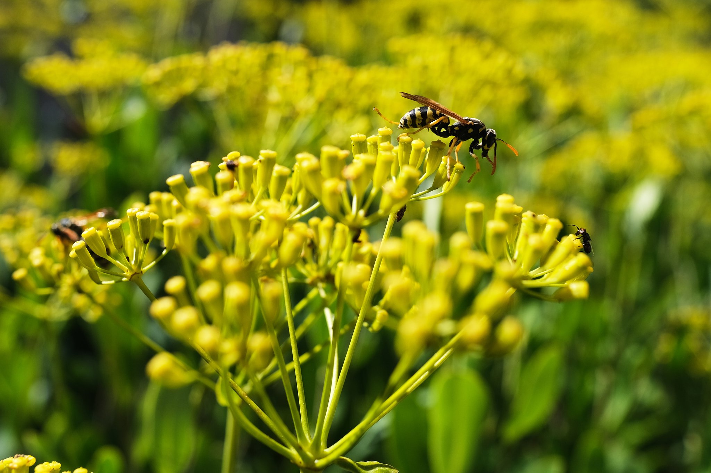
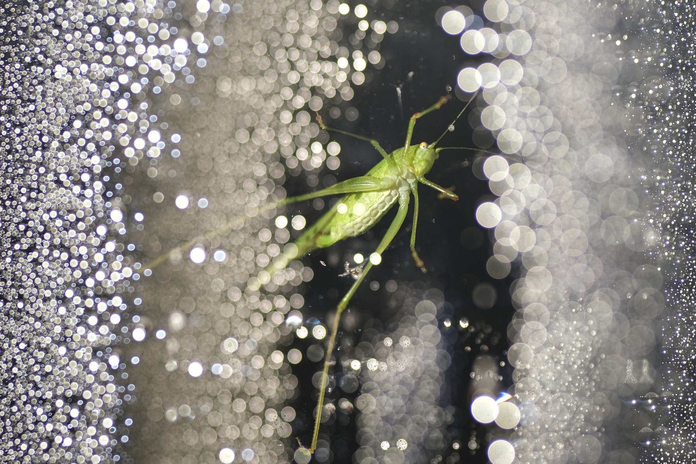
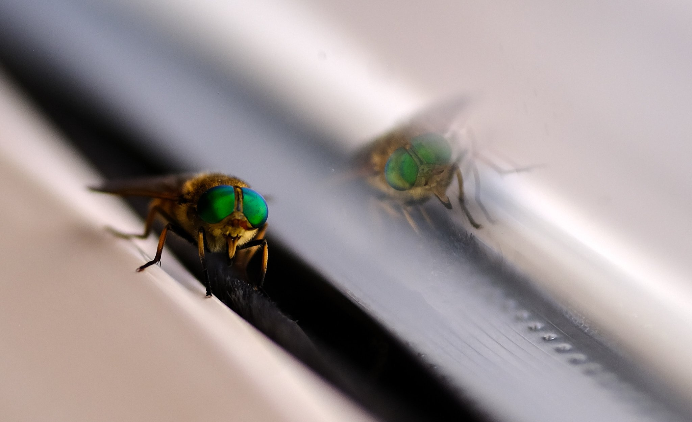
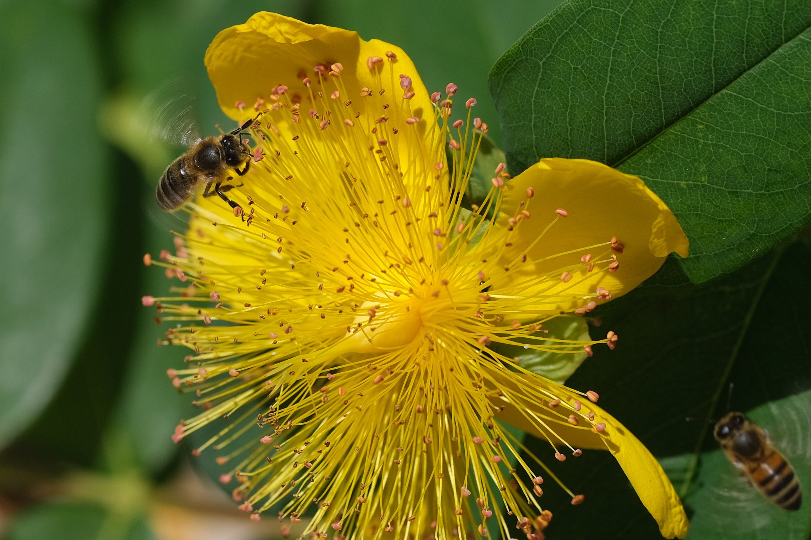
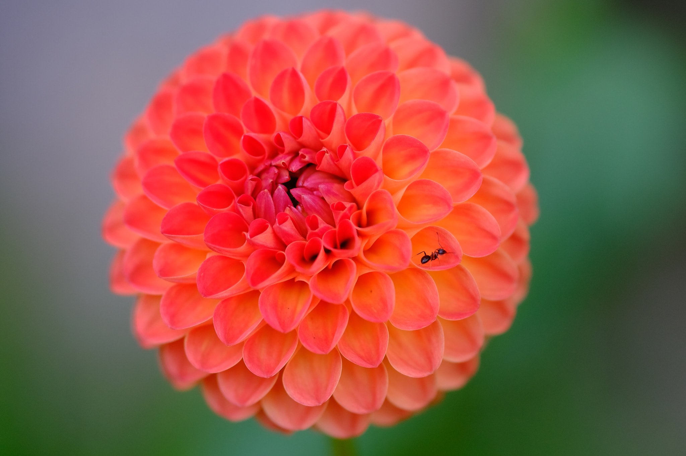
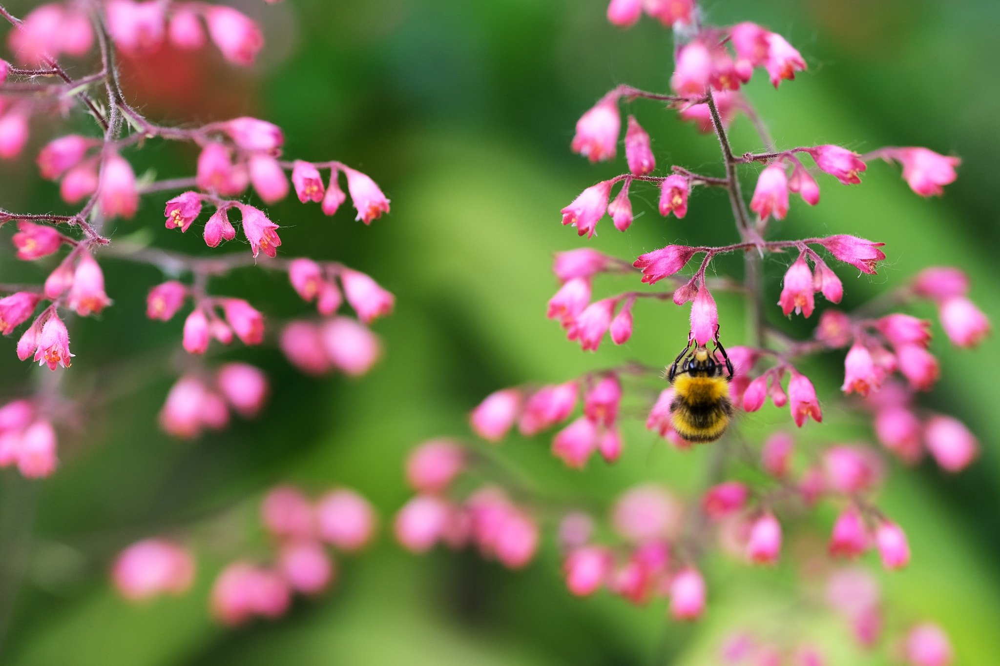
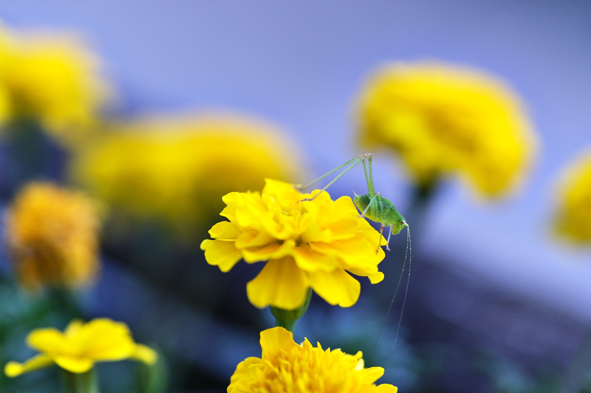
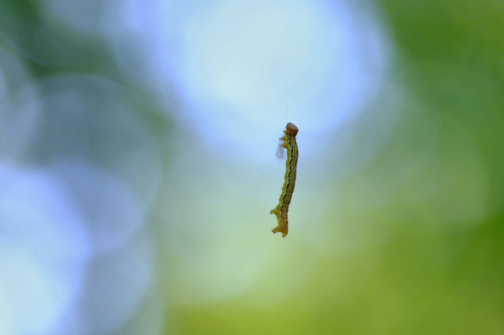
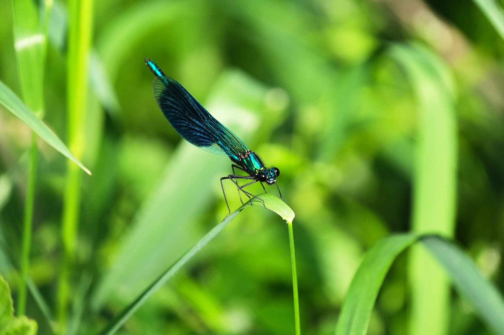

Lot (46) - ISO 160 1/1100 s f/4.5 18mm - FUJIFILM X-S10

Lot (46) - ISO 200 1/800 s f/2 90mm - FUJIFILM X-S10

Lot (46) - ISO 320 1/125 s f/2 90mm - FUJIFILM X-S10
 Lot (46) - ISO 160 1/240 s f/2.5 18mm - FUJIFILM X-S10
Lot (46) - ISO 160 1/240 s f/2.5 18mm - FUJIFILM X-S10

Lot (46) - ISO 320 1/900 s f/4 90mm - FUJIFILM X-S10

Lot (46) - ISO 320 1/125 s f/2 90mm - FUJIFILM X-S10

Lot (46) - ISO 160 1/300 s f/2.2 18mm - FUJIFILM X-S10

Lot (46) - ISO 640 1/250 s f/2 90mm - FUJIFILM X-S10

Bressols (82) - ISO 200 1/125 s f/2 90mm - FUJIFILM XT-5

Angers (49) - ISO 640 1/1000 s f/5.6 400mm - FUJIFILM X-S10
❮
 ❯
❯